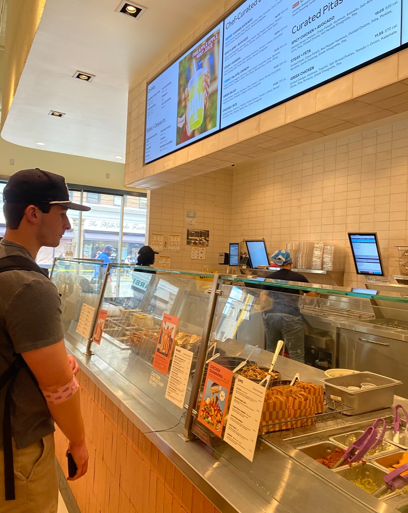

CAVA – Oakland



📍 Location:
3712 Forbes Ave, Pittsburgh, PA 15213
3712 Forbes Ave, Pittsburgh, PA 15213
💲 Price Range:
$11–$15 per meal
$11–$15 per meal
🥙 Menu Highlights:
My Review
The new CAVA in Oakland just opened recently, and I’ve already been there more than ten times (actually). It’s quickly become one of my go-to spots between classes.
The food is affordable, healthy, and surprisingly filling — basically the perfect combo for a college student trying to survive the week. Everything tastes fresh, the portions are generous, and the options make it easy to switch things up without getting bored.
Oakland really needed something like this, and CAVA nailed it.